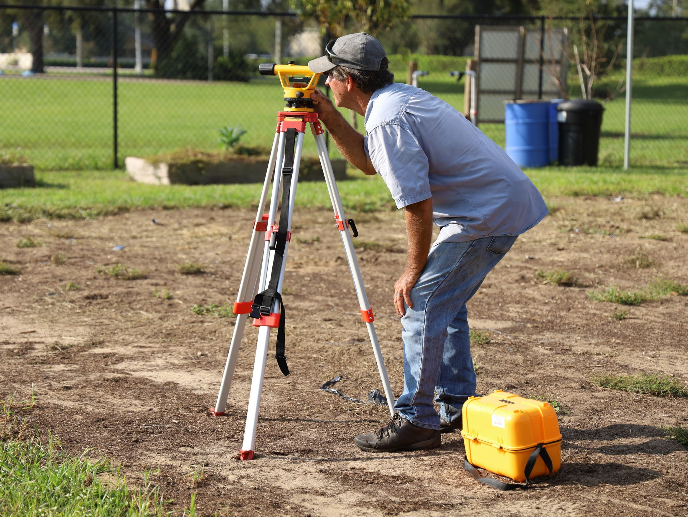

S-01 / Surface
Field data & terrain
Point review, linework integrity, TIN surfaces, contours, and terrain-model quality control using Civil 3D and Trimble Business Center.
01 / Surveying
I support survey and geospatial production from field-point review through finished CADD documentation, with an eye for accuracy, legibility, and how information will be used downstream.

S-01 / Surface
Point review, linework integrity, TIN surfaces, contours, and terrain-model quality control using Civil 3D and Trimble Business Center.
S-02 / Records
Clear record information for storm, water, sewer, and BMP systems, developed from field observations, redlines, and supporting records.
S-03 / Boundary
Deed research, record easements, exhibits, and legal-description plats—described here without exposing client or parcel information.
S-04 / Scope
Survey scope development, effort estimates, and organized production tracking in Excel, Bluebeam, and CADD workflows.